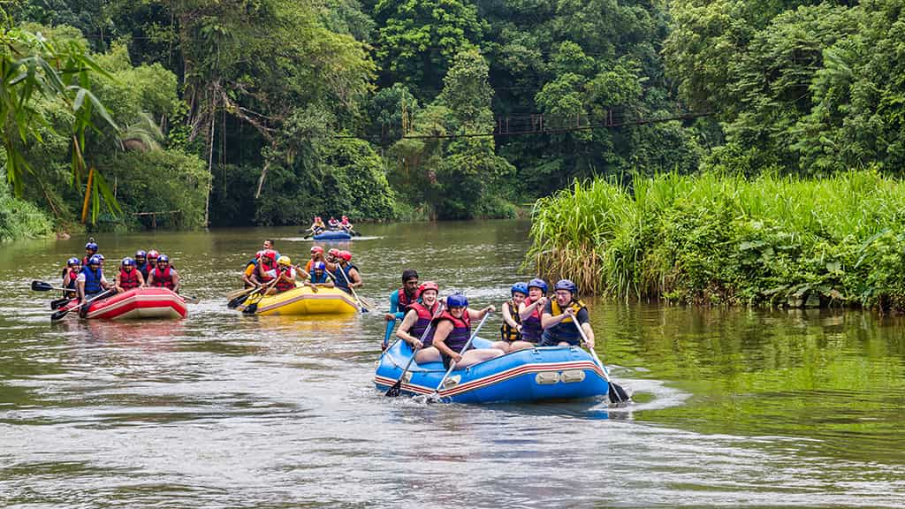
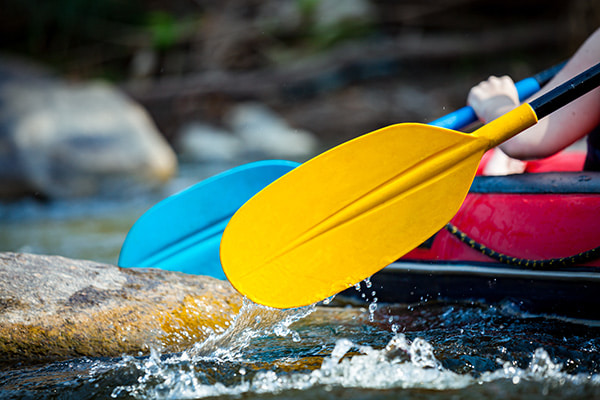
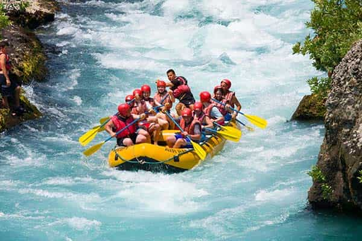
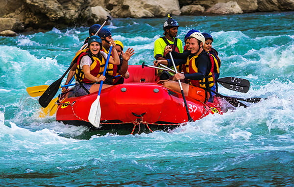

Join us for an unforgettable white water rafting experience in the heart of Kenya. Our expert guides will take you through thrilling rapids and breathtaking scenery.

White Water Rafting
History
White water rafting has been a popular adventure sport in Kenya for many years, attracting thrill-seekers from around the world. The rivers here offer some of the best rafting experiences, with varying levels of difficulty suitable for both beginners and experienced rafters.
Adventure Awaits You!
   